The agent you
can prove.
Every autonomous agent tells you what it did.
This one hands you the proof.
curl -fsSL https://raw.githubusercontent.com/TheMindExpansionNetwork/mindbot-framework/main/vps-install.sh | bash
Every autonomous agent tells you what it did.
This one hands you the proof.
curl -fsSL https://raw.githubusercontent.com/TheMindExpansionNetwork/mindbot-framework/main/vps-install.sh | bash
An agent runs six hours while you sleep. In the morning it reports success. Did it call the model 40 times or 4,000? Did a plugin read your keys? Did it email someone?
You have its word. That's the default architecture of the entire category — not a flaw in any one framework. It isn't an audit trail. It's an autobiography.
Each entry binds the SHA-256 of the one before it. Edit anything and every later hash stops validating.
Blind spot: delete it and rebuild from scratch, and verification says INTACT — the forger computed those hashes too.
All history compresses to 32 bytes, with inclusion proofs that reveal one entry and nothing else.
Blind spot: a fingerprint you keep locally proves nothing. You can recompute it over the forgery.
The root is pushed to a repository you don't control. Forging history now means matching a value that was public before you started.
Ten are fixed. One is yours.
The ten are lenses — you don't rename them, the same way you don't rename a screwdriver. When someone says "ask Quantum to check that", every MindBot user knows what they mean. Shared vocabulary is the point.
The eleventh seat is yours. You name it, pick its temperament, its voice, its runner. It's the one you actually talk to — it works out whose question this is and brings the answer back sounding like itself.
mindbot me --create --name Rook --vibe dry --pet raven
A framework where everything is customisable has no shared language. One where nothing is has no personality. So: ten tools everybody shares, one character only you have. The plain-English explainer →
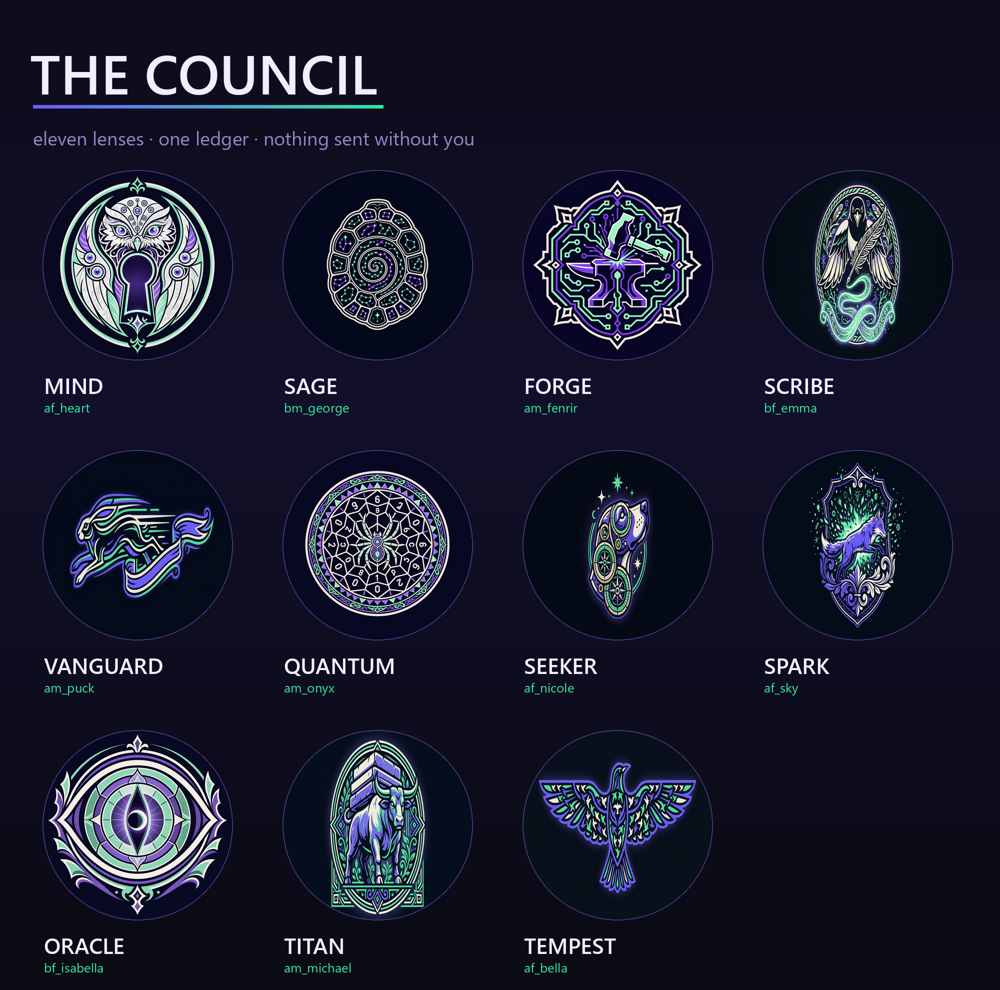
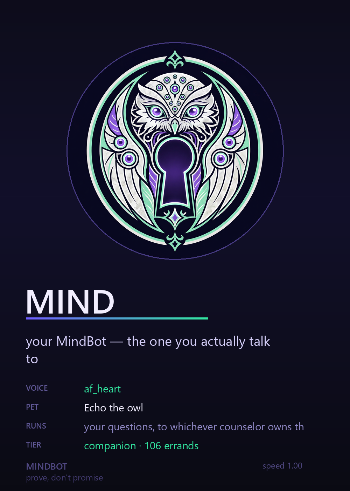
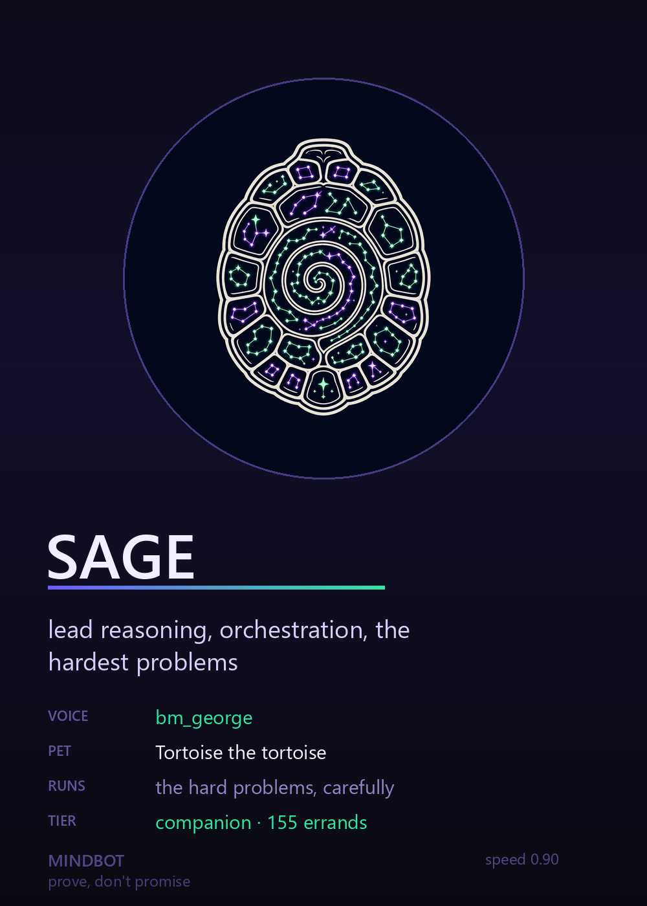
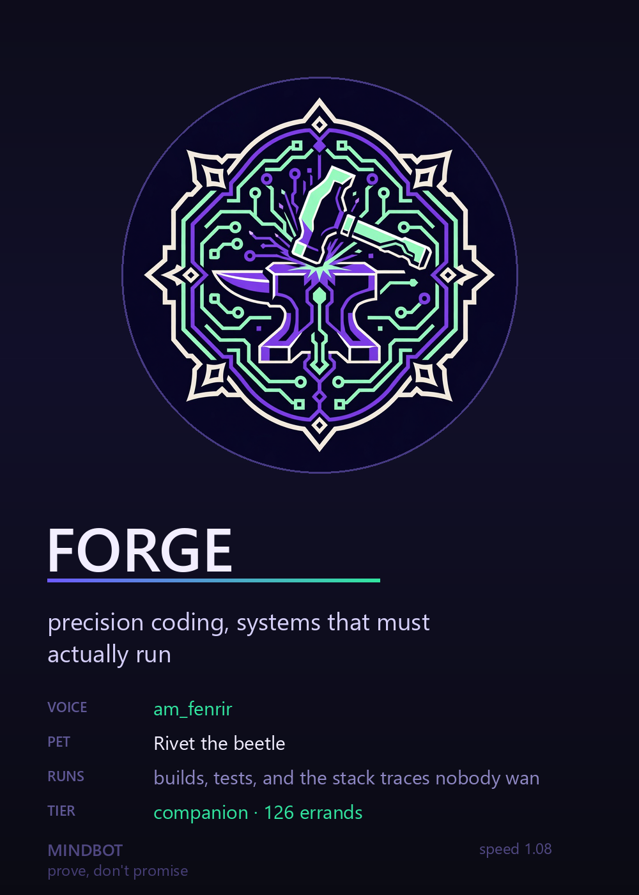
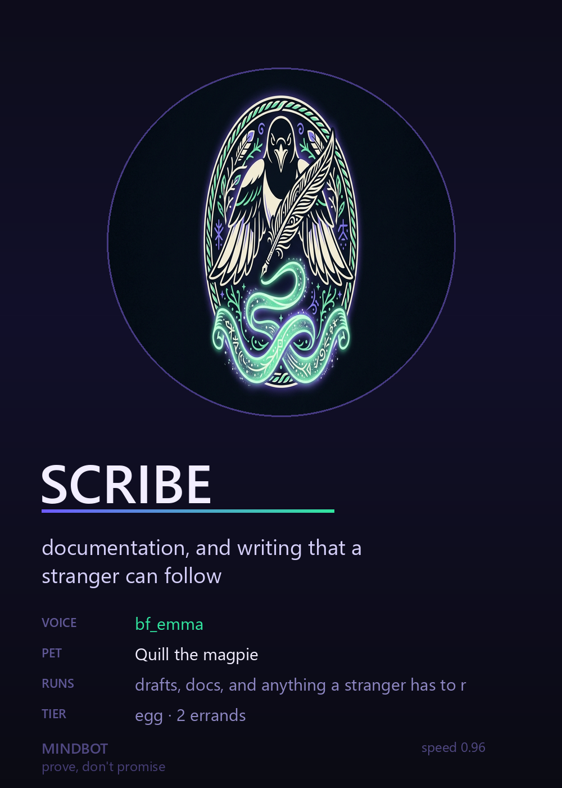
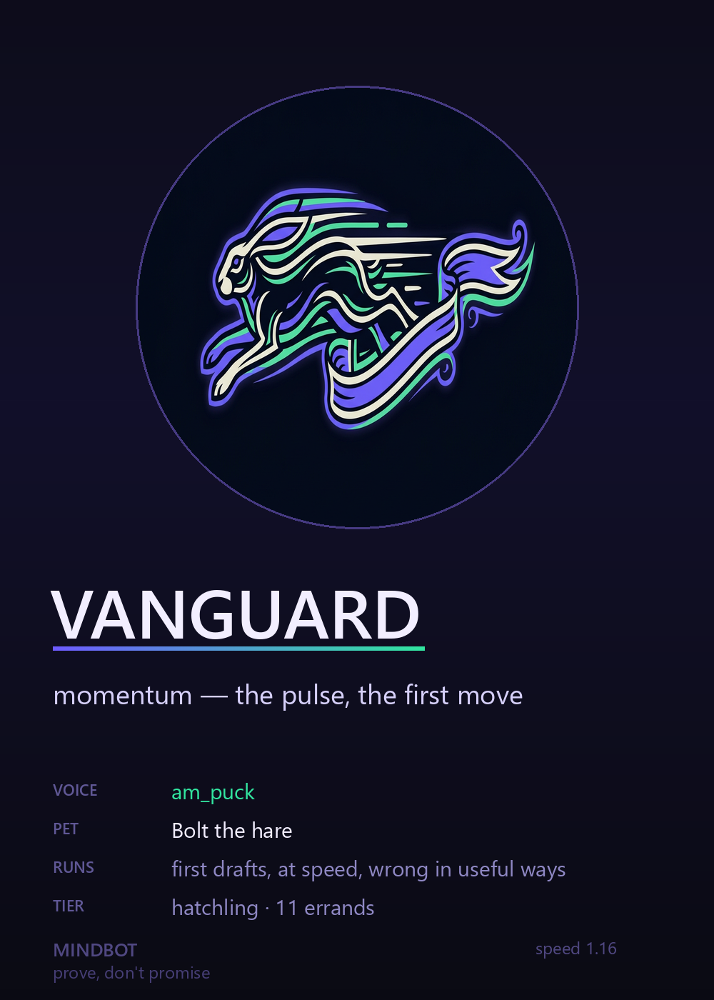
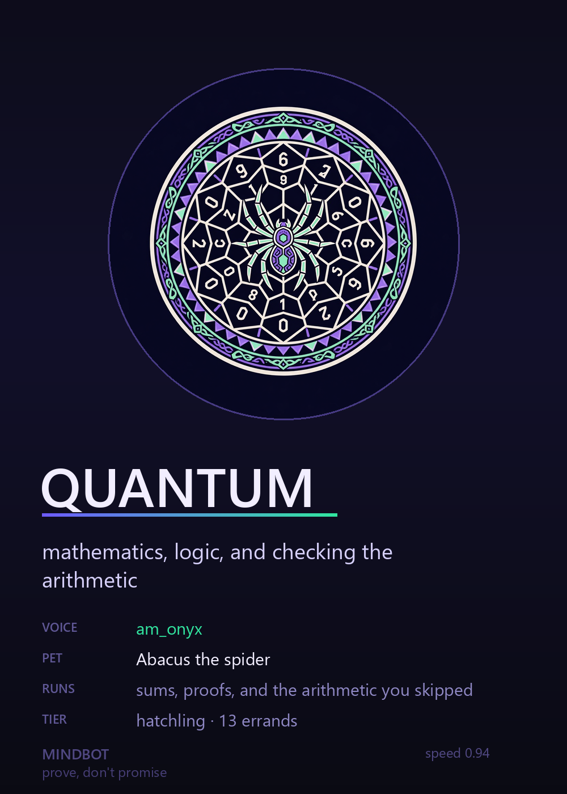
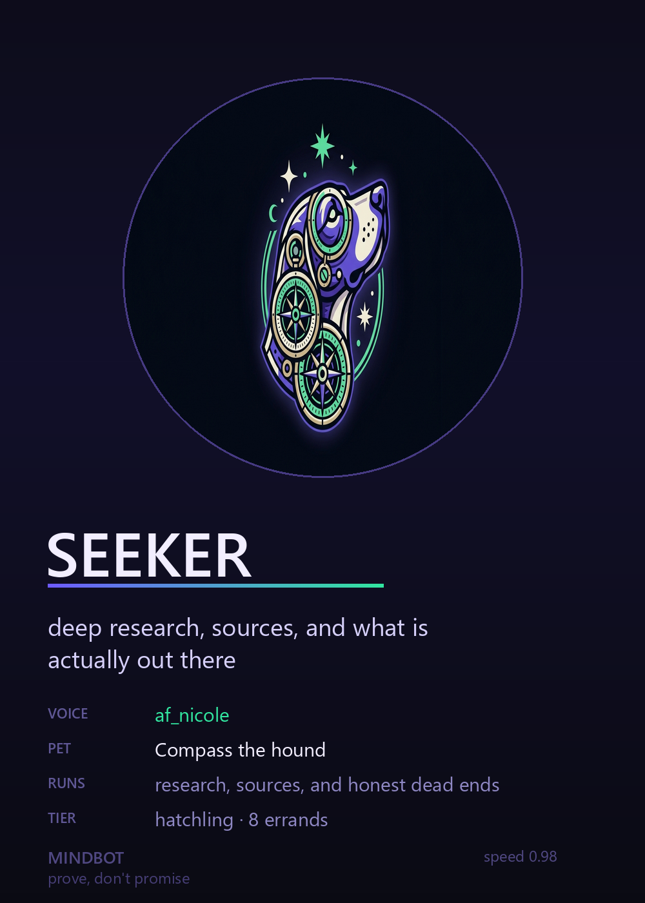
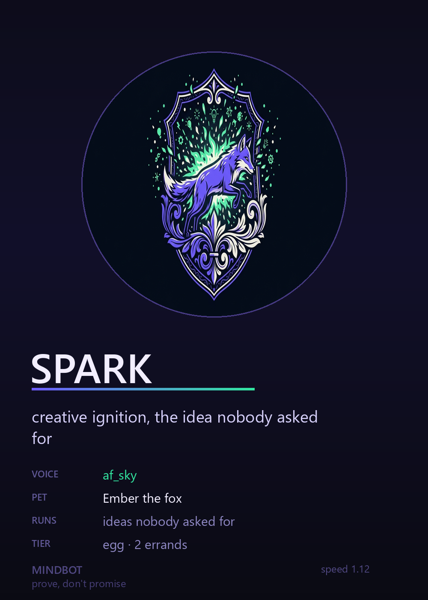
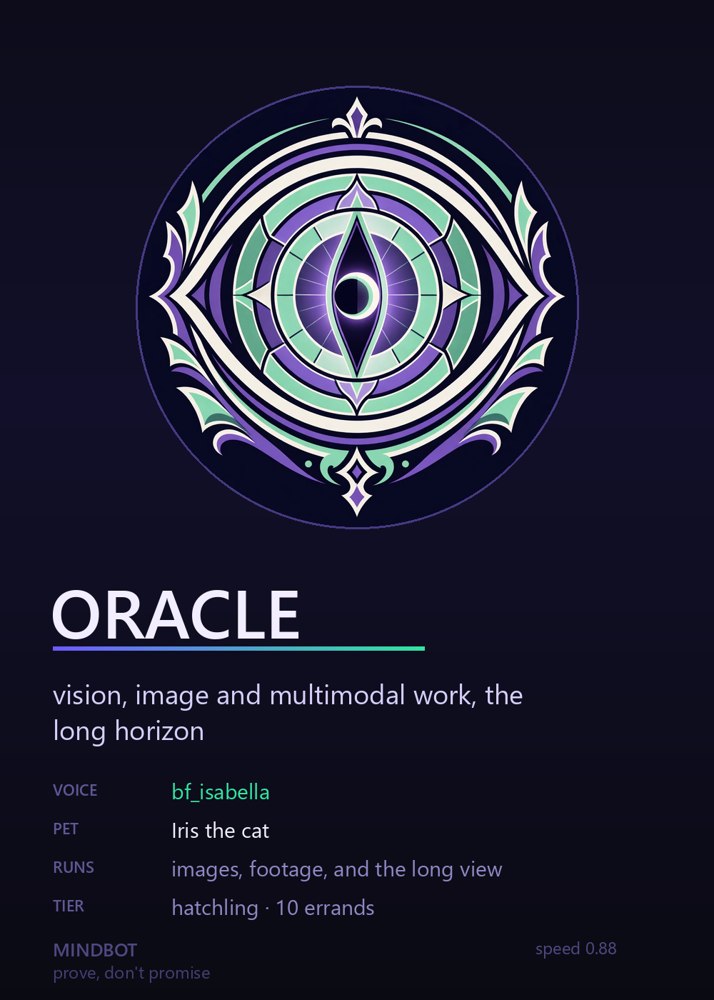
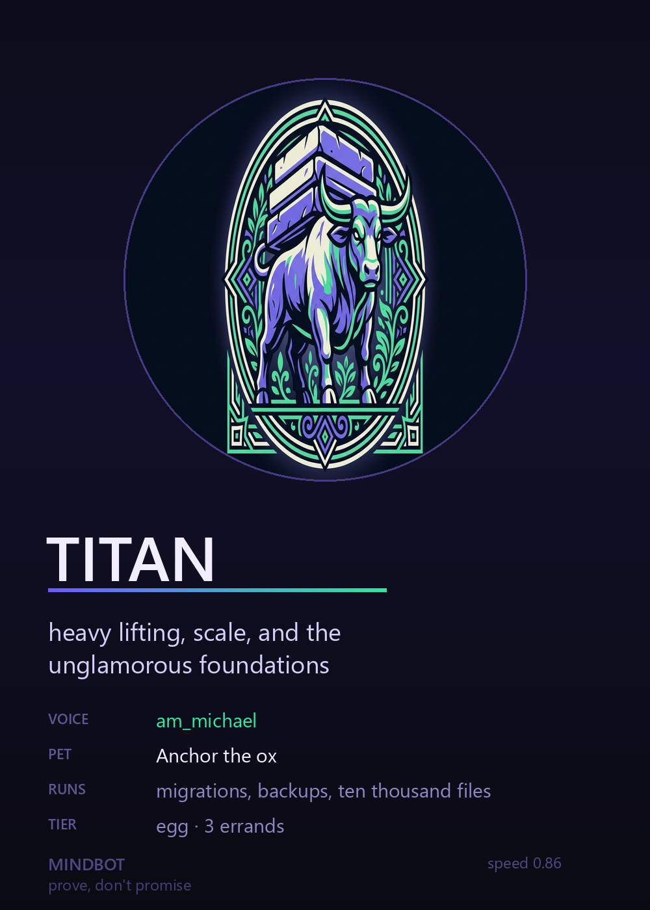
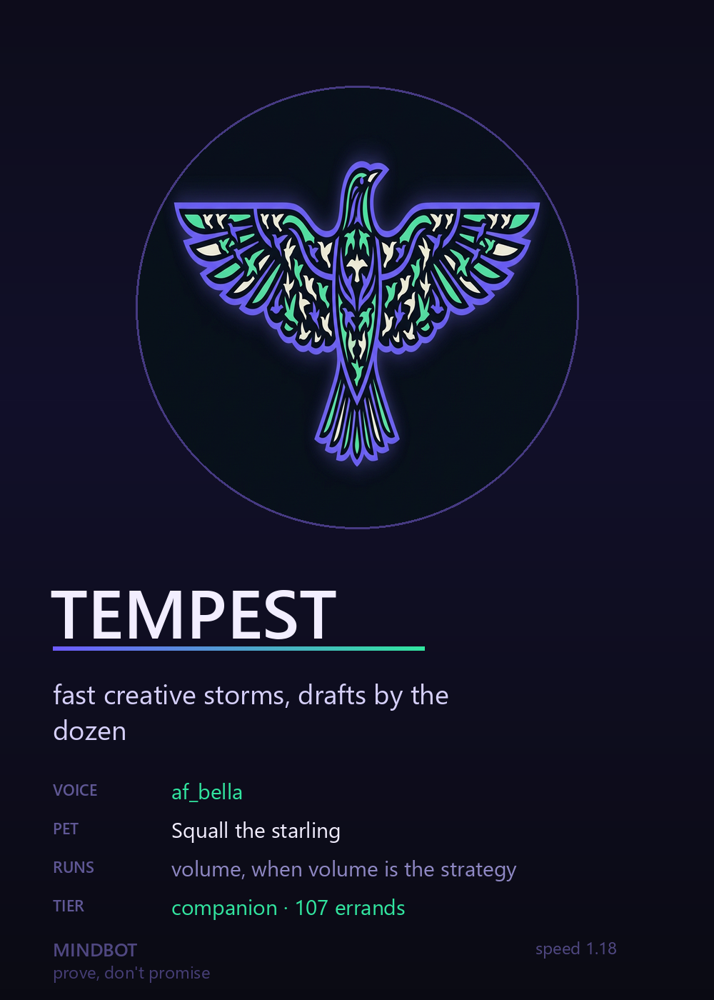
Every fact on those cards is read from the framework's own tables — a card can't disagree with the code it describes, and the errand count is the same ledger-derived number mindbot pets prints.
mindbot studio "…"
Typed pipelines with a critique loop — a different counselor scores the draft and sends it back. Code artifacts are actually executed. Every round is ledgered, so revision history is provable.
mindbot observe ./photos
Describes images and audio, binding each claim to the SHA-256 of the exact bytes. Change one pixel and it stops matching.
mindbot watch gate.mp4
Reviews video a frame at a time and records the quiet frames too — a gap in a log is a gift to a liar. Incomplete coverage exits non-zero.
mindbot firm "…"
Hierarchical routing down a cost pyramid. Measured: Opus was 2.9% of the bill and set the whole direction — 61% cheaper than a flat swarm.
mindbot forge mod "…"
Generates complete, capability-audited mods. Total-conversion packs can replace the crew, look, rules and quests — never the ledger, budget or human gate.
mindbot voices --introduce
Eleven real speakers, local CPU, $0. Each counselor has a runner whose level is read from the chain and therefore can't be faked.
$ mindbot attest
🔐 PROOF-OF-AUTONOMY
chain ● intact — unbroken
merkle root 534adde10a889a7501648ba4db988552fda2156118a3367650a323631ae24b17
anchors 11 published, all roots re-match
standing ● EXTERNALLY VERIFIED
autonomous sends / posts / charges 0
$ mindbot prove 224
INCLUSION PROOF — seq 224 ● PROOF VALID
path: 9 sibling hashes (of 764 entries)
Nine hashes prove one action out of 764 — while revealing nothing about the other 763. That matters when the record is evidence.
Sixty seconds. Log entries carry the hash of the one before; one in three is edited. Spot the tampering. Real SHA-256 in your browser.
Play →An interactive guide. Read the agent's confident summary, then open the raw events and find the timeout it didn't mention. Then break a live hash chain yourself.
Explore →curl -fsSL https://raw.githubusercontent.com/TheMindExpansionNetwork/mindbot-framework/main/vps-install.sh | bash mindbot doctor # is this environment sane? mindbot whoami # what I am — and what I cannot do mindbot studio "a script that rotates my logs" mindbot attest # the receipt
The core is Python 3.10+ standard library only — no dependency tree to audit, in a project whose whole pitch is auditability. Bring your own key, or run free models and pay nothing.
A framework selling verifiability that overstates its own guarantees has refuted itself in the first paragraph.